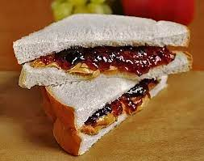

Peanut Butter & Jelly Sandwich

Description
Another simple and classic recipe. It's something you make when you're in a rush or for nostalgia.
Ingredients
- Bread
- Peanut butter (organic, if possible)
- Strawberry jam, or a flavor of your choosing
Steps
- Toast 2 slices of bread
- Spread peanut butter onto one slice
- Spread jelly onto the other slice
- Combine both bread slices
- Cut sandwich in half and enjoy!